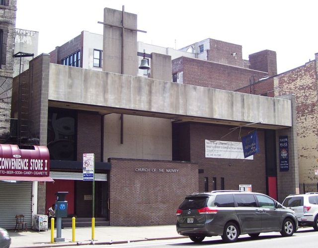
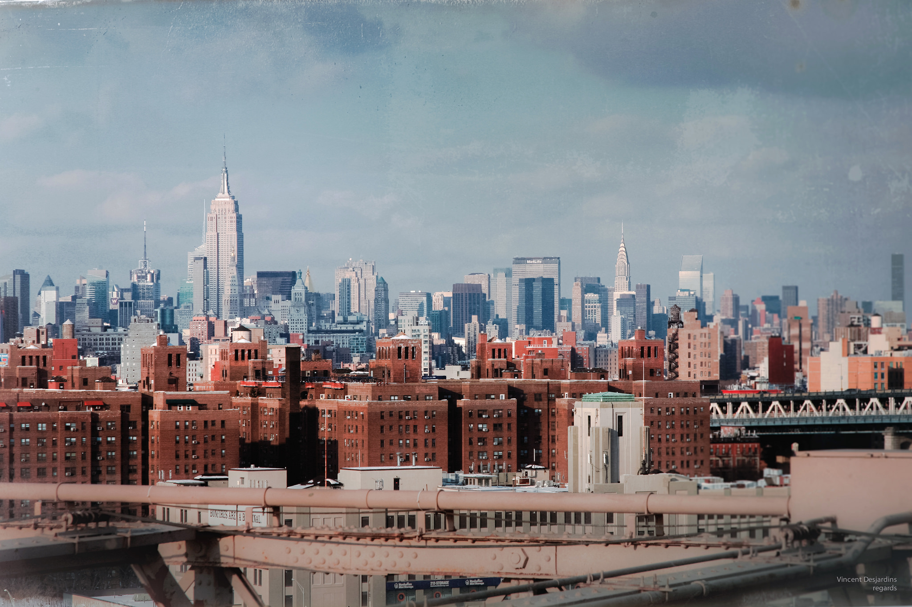

A proposal made to the Archdiocese of New York could turn a shuttered East Village church into hundreds of below-market-rate housing. Cooper Square Community Land Trust has partnered with developer Johnathan Rose Companies to build a mixed-income community on the 300,000 square foot parcel on East 13th Street between Avenues C and D. It has been a years-long effort in urging the archdiocese to cover the church into affordable homes. Nearly half of all tenants in the East Village are rent burdened.
The archdiocese has committed to converting 100,000 square feet of space to affordable housing, but housing advocates believe the church should extend its charitable mission by donating the entire lot to affordable housing. “We believe it would be unjust to develop part of St. Emeric’s for market rate housing,” wrote Valerio Orselli, project director with the Cooper Square Community Land Trust, and Steve Herrick, the executive director of the Cooper Square Committee, in a recent letter to David Brown, the archdiocese’s director of real estate. “The Lower East Side/East Village community between East 14th St. and Houston St. has lost a great deal of affordable housing in the past decade, and we cannot help but view the Archdiocese’ disposition of its properties in this context.”
The archdiocese invited Cooper Square to submit a revised proposal after rejecting their July bid to partner with the Catholic Church for low-income senior housing at the Church of the Nativity at 42-46 Second Avenue. The archdiocese claims to be the largest private developer of low-low-income housing in the city.